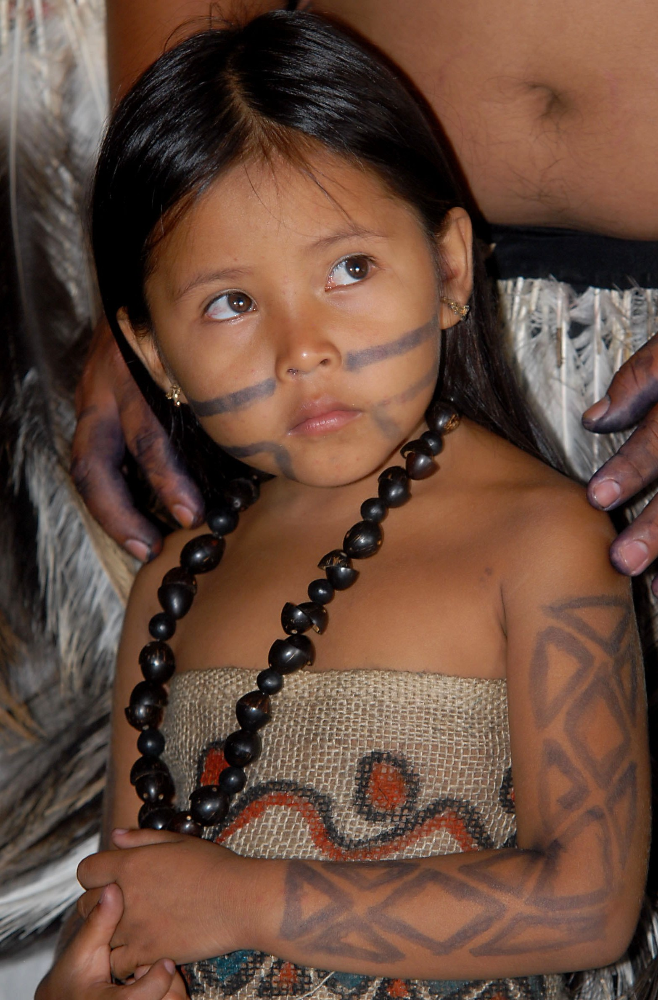

História da tribo Terena
Os Terena são um grupo entre os quatro subgrupos Guaná. O Chaco Boreal, com cerca de 600.000 km², forma a maior parte do território do Paraguai e estende-se até o Pantanal, no Mato Grosso do Sul, sendo uma parte do Gran Chaco. Mais de vinte povos indígenas viviam nessa área. Entre eles, os Guaná, um povo agricultor e mais pacífico do que seus vizinhos, os Guaikuru. Suas aldeias eram grandes, possuindo de 30 a 40 casas, cada uma com cerca de 20 a 30 pessoas, e a população era de cerca de mil pessoas. A aldeia estava situada no meio de um território extenso de roças. A sociedade era estratificada em classes: 'nobres', 'guerreiros' e 'alheos' (cativos e escravos).
Últimos remanescentes da nação Guaná no Brasil, os Terena falam a língua Aruak e possuem características culturais essencialmente chaquenhas (de povos provenientes da região do Chaco). O domínio dos grupos de língua Aruak entre os diversos povos indígenas do Chaco, todos caçadores e coletores, deveu-se ao fato daqueles grupos serem, de longa data, predominantemente agricultores – e sobre esta base econômica se organizarem socialmente em grupos locais (aldeias) mais populosos, expansionistas e guerreiros.
Os estudiosos dos povos chaquenhos afirmam que os Chané ou Guaná dispunham de uma base social muito mais sofisticada do que seus vizinhos Mbayá. Estavam estratificados em camadas hierárquicas: os ‘nobres’ ou ‘capitães’ (os Naati ou "os que mandam") e a ‘plebe’ ou ‘soldados’ (Wahêrêxané, ou "os que obedecem").
As relações de aliança Guaná-Mbayá estavam alicerçadas no casamento: os chefes Guaná cediam mulheres da sua casta para casar-se com os "maiorais" Mbayá. As relações entre os dois grupos, por essa via, consolidaram ao longo do tempo uma estrutura social complexa: de um lado, um segmento social autônomo, na posição de fornecedor de mulheres e alimentos; de outro, uma casta guerreira tomadora de mulheres, responsável pela segurança dos grupos locais e supridores de instrumentos de ferro e cavalos.
Fontes:
https://bit.ly/2OVLHKu
https://bit.ly/2S2WV1B